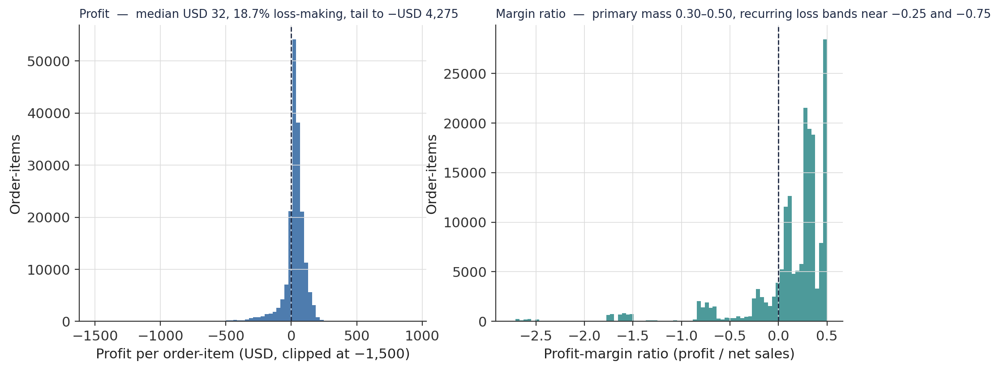
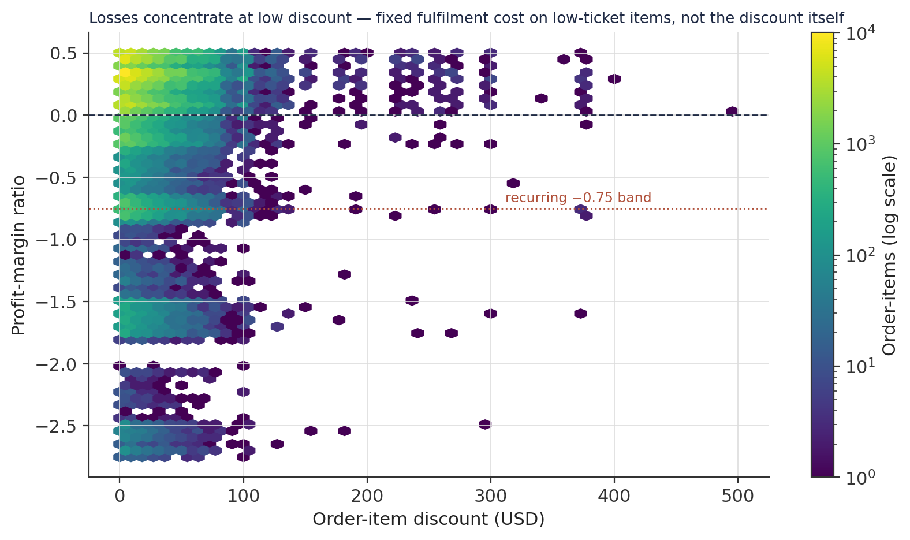
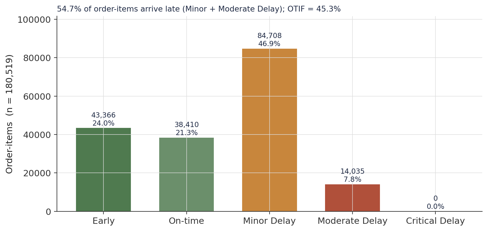
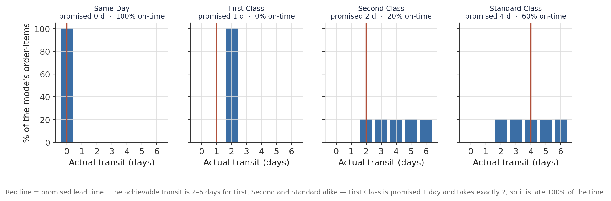
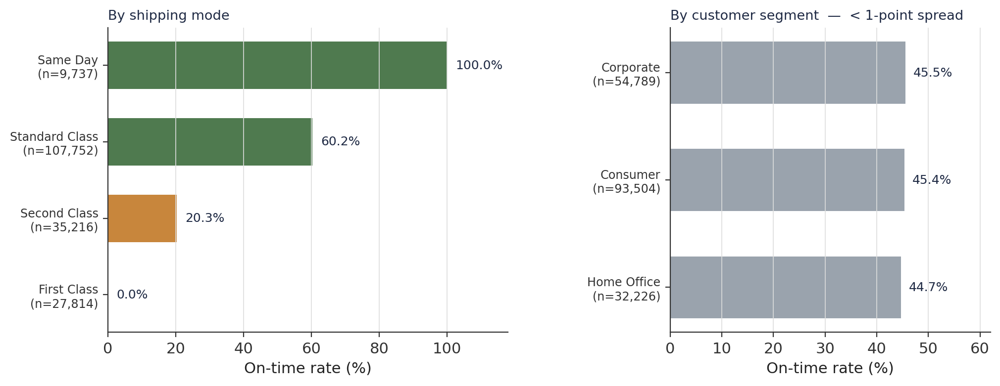
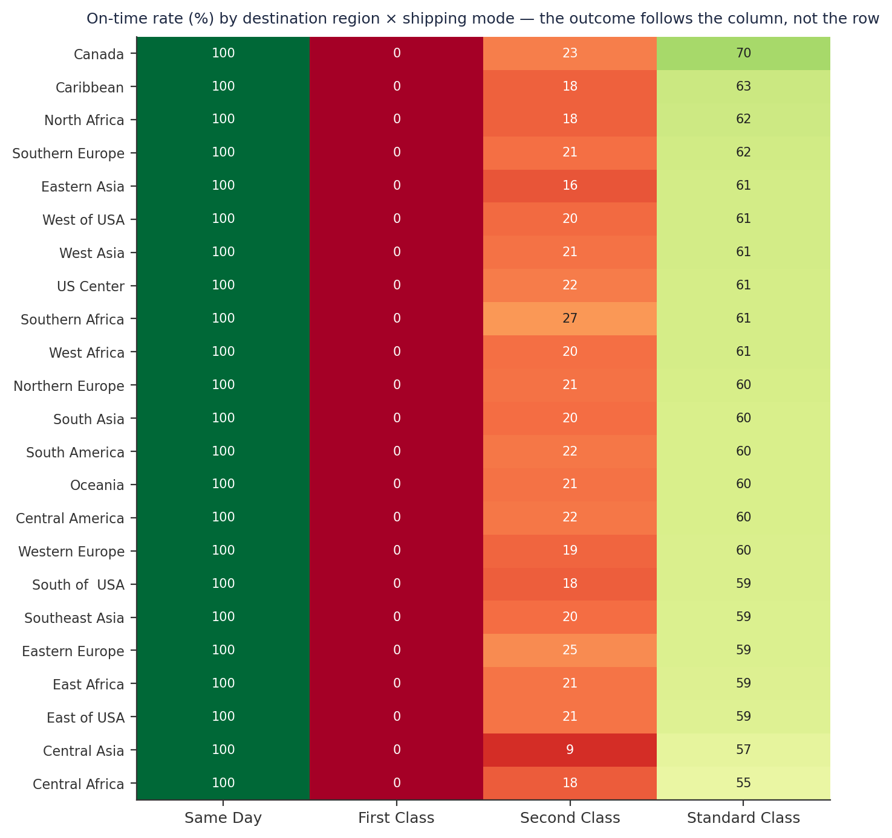
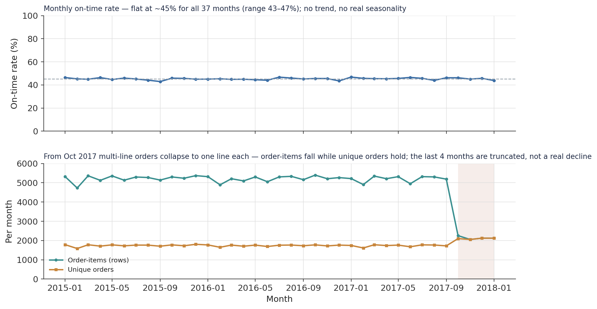
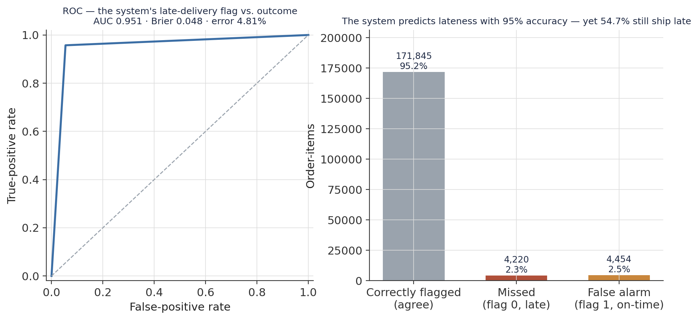

Where a Global Supply Chain Loses Time: A Multi-Axis OTIF Diagnostic of 180,519 Order-Items
An exploratory operations analysis of a three-year, 164-country logistics dataset — decomposing a 54.7% late-delivery rate across shipping mode, customer segment, destination region, and time, and testing the system’s own late-delivery flag.
A diagnostic read of on-time-in-full (OTIF) performance across 180,519 order-items. The headline: 54.7% of order-items arrive late; OTIF is 45.3%. The mechanism: the outcome is set almost entirely by shipping mode, because mode fixes the promised lead time while the network’s achievable transit is a flat 2–6 days regardless — First Class is promised 1 day, takes exactly 2, and is late 100% of the time across all 27,814 shipments and every region. Not a driver: customer segment (44.7–45.5%, a sub-1-point spread) and destination region. A prediction–action gap: the source system’s late-delivery flag matches the outcome on 95.2% of order-items (ROC-AUC 0.95), yet the majority still ship late.
OTIF, on-time in-full, late delivery, supply chain diagnostic, shipping mode, lead time, delivery performance, exploratory data analysis, profit margin erosion, correlation analysis, predictive integrity, ROC-AUC, Brier score, Python, pandas
Abstract
This study is a descriptive operations diagnostic of the DataCo logistics dataset — 180,519 order-items shipped over three years (January 2015 – January 2018) to 164 countries. The objective is to quantify on-time-in-full (OTIF) performance and locate where delivery time is lost. The analytical table is the validated Gold layer produced by a companion data-engineering pipeline; all measures are recomputed from it directly. 54.7% of order-items arrive late (OTIF 45.3%), and this rate is flat across all 37 months with no trend and no material seasonality. The late-delivery outcome is governed almost entirely by shipping mode: mode determines the promised lead time (Same Day 0 days, First Class 1, Second Class 2, Standard Class 4), while the network’s achievable transit is a near-flat 2–6 days for every scheduled tier. First Class is promised 1 day, takes exactly 2, and is therefore late on 100.0% of its 27,814 shipments in every destination region. Customer segment (44.7–45.5% on-time) and destination region are not drivers. Commercially, 18.7% of order-items are loss-making, with a tail to −$4,275 per line, concentrated at low discount and low ticket value — consistent with fixed fulfilment cost exceeding the sale price on economy items. The source system’s own late-delivery flag reproduces the realised outcome with ROC-AUC 0.95 and a 4.8% error rate, yet the majority of flagged orders still ship late — a prediction–action gap, not a prediction gap. No inferential or causal claim is made; the dataset is a single operational history and OTIF here reduces to on-time only, as no fill-rate field is present.
Keywords: OTIF, late delivery, shipping mode, lead time, supply-chain diagnostic, exploratory data analysis, predictive integrity
Introduction
On-time-in-full (OTIF) is the standard headline metric of logistics performance: the share of orders delivered by the promised date and in the promised quantity. It is a blunt instrument by design — one number that a fulfilment operation either clears or does not. This analysis takes a dataset of 180,519 order-items from a global e-commerce supply chain and asks three questions of it: how bad is OTIF, where is the time being lost, and does the operation already know.
The dataset is transactional at order-item grain — one row per product within one customer order, so a three-product order appears as three rows. That grain is deliberate: every discount, delay, and margin is recorded at the level of the individual item, which is where operational decisions actually bite. The table used here is the Gold output of a companion medallion ETL pipeline that resolved the raw encoding issues, corrected mislabelled store-location fields, and — importantly for this analysis — reconstructed the Same-Day transit-time field from the actual order and shipping timestamps after finding it mis-recorded for 4,657 shipments. All delivery-timing logic below rests on that corrected field.
The central result is uncomfortable and simple: more than half of all order-items arrive late. The rest of the analysis is about what that number is made of.
Method
Data source
A single analytical table, fact_logistics_gold (180,519 rows × 44 columns), covering order-items with order_date between 1 January 2015 and 31 January 2018. It carries no missing values in any analysed column — the upstream pipeline applied deterministic type casting and dropped or repaired every field with a known defect. Geographic and catalogue scope is summarised in Table 1.
Table 1
Dataset Scope and Composition (N = 180,519 order-items)
| Dimension | Composition |
|---|---|
| Time | 2015-01-01 to 2018-01-31 (1,126 days); volume stable to Sep 2017, then a data-truncation artefact (see Results) |
| Destinations | 164 countries · 23 regions · 5 markets (LATAM 51,594; Europe 50,252; Pacific Asia 41,260; USCA 25,799; Africa 11,614) |
| Stores | 563 cities across two countries (continental USA 111,146; Puerto Rico 69,373 — a single hub city, Caguas, accounts for 66,770) |
| Catalogue | 118 products · 50 categories · 11 departments (Fan Shop 66,861; Apparel 48,998; Golf 33,220) |
| Customer segments | Consumer 93,504 (51.8%) · Corporate 54,789 (30.4%) · Home Office 32,226 (17.9%) |
| Shipping modes | Standard Class 107,752 · Second Class 35,216 · First Class 27,814 · Same Day 9,737 |
| Payment types | Debit 69,295 · Transfer 49,883 · Payment 41,725 · Cash 19,616 |
Note. The five highest-volume products account for 58% of all order-items; the catalogue is highly concentrated, a point the companion product-analytics study develops.
Variables and measures
The primary operational outcome is is_late_actual — a binary flag set when actual transit (calendar_days_to_ship, reconstructed from timestamps) exceeds the scheduled window (shipping_days_scheduled). OTIF is reported as 1 − mean(is_late_actual); with no delivered-quantity field in the source, “in full” cannot be evaluated and OTIF here is on-time only. Supporting measures: delivery_performance_type (a five-level cut of shipping_delay_days: Early < −1, On-time [−1, 0], Minor Delay (0, 2], Moderate Delay (2, 5], Critical Delay > 5); shipping_delay_days (signed actual − scheduled); profit_margin_ratio and order_profit_per_order for the commercial view; and late_delivery_risk, a binary flag generated by the source operational system before shipment, with system_prediction_gap = late_delivery_risk − is_late_actual.
Analytical approach
The analysis is descriptive. OTIF is decomposed by cross-tabulation against shipping mode, customer segment, and the region × mode grid, with counts reported alongside every rate. The promised-versus-achievable lead-time mechanism is examined by cross-tabulating shipping_days_scheduled and calendar_days_to_ship within each mode. Temporal behaviour uses monthly resampling of the on-time rate and of order-item versus unique-order counts. Pairwise Pearson correlations are computed across ten financial and operational variables. Isolation Forest (contamination = auto) is applied to the discount–profit plane as an unsupervised check on where losses concentrate. The predictive integrity of late_delivery_risk is assessed against is_late_actual with ROC-AUC, the Brier score, and a confusion decomposition. No model is fitted for prediction; no hypothesis test is performed.
Software
Python 3.10 with pandas, numpy, scikit-learn (Isolation Forest, ROC-AUC, Brier score), and matplotlib for figures.
Results
Commercial baseline
The operation runs on thin and fragile margins. Net sales per order-item have a median of $164 (mean $183, max $1,940). Profit per order-item has a median of just $31.52, an interquartile range of $7.00–$64.80, and a tail reaching −$4,275 on a single line; 18.7% of all order-items are loss-making (Figure 1, left). The profit-margin ratio is multimodal (Figure 1, right): a primary mass between 0.30 and 0.50, a fragile secondary cluster between 0 and 0.20, and distinct recurring loss bands near −0.25 and −0.75 — their regularity points to fixed operational triggers rather than random variation.
Figure 1
Profit and Margin Distributions at Order-Item Grain

Note. Profit axis clipped at −1,500 for legibility; the true minimum is −4,275.
Plotting discount against margin locates the erosion (Figure 2). The deepest losses sit at the low end of the discount range — a large volume of near-zero-discount, low-ticket order-items nonetheless producing margins of −0.75 and below. Losses thin out and rise toward break-even as discount climbs past ~$200, because high-discount lines are high-ticket products whose margins absorb both the concession and the shipping cost. An Isolation Forest on the same plane flags about 15% of order-items as anomalous; these span the full discount range (median discount $40) but are four times more likely to be loss-making than the rest (52% vs. 13%) — the anomaly signal is the profit collapse, not the discount level. The pattern is consistent with a fixed fulfilment cost that exceeds the sale value of economy items — the business subsidising the logistics of its own low-price catalogue — rather than with discounting per se.
Figure 2
Discount Versus Profit-Margin Ratio (hex-binned, log colour scale)

Note. Colour is order-item count on a log scale. The dashed line is break-even; the dotted line marks the −0.75 band.
The core finding: 54.7% late
Recomputed from the corrected transit field, 54.7% of order-items arrive late and OTIF is 45.3% (Figure 3). The single largest outcome class is Minor Delay — a 1–2 day overrun — at 84,708 order-items (46.9%). Early deliveries account for 24.0% and On-time for 21.3%; Moderate Delay is 7.8%, and the Critical Delay class (> 5 days late) is empty, which reflects the scheduled/actual arithmetic being bounded rather than extreme delays being eliminated. A near-quarter of shipments arriving early alongside a majority arriving late describes a network that is unpredictable rather than uniformly slow.
Figure 3
Delivery-Performance Decomposition

Note. “Late” = Minor Delay + Moderate Delay = 98,743 order-items = 54.7%.
The mechanism: mode fixes the promise, not the capability
The late rate is almost entirely a function of shipping mode, and the reason is structural (Figure 4). Mode maps one-to-one onto the promised lead time: Same Day is scheduled at 0 days, First Class at 1, Second Class at 2, Standard Class at 4 (the value 3 never occurs). But the achievable transit distribution is essentially the same for the three scheduled tiers — a roughly uniform spread over 2 to 6 days. Same Day, promised 0 and delivered in 0, is on-time 100% of the time. First Class, promised 1 and delivered in exactly 2, is late 100% of the time. Second Class (promised 2) catches only the ~20% of shipments that happen to land at 2 days; Standard Class (promised 4) catches ~60%.
Figure 4
Promised Lead Time Versus Achievable Transit, by Shipping Mode

Note. The physical network delivers in 2–6 days irrespective of the service tier purchased. OTIF differs across tiers only because the promise does.
The OTIF-by-mode ranking follows directly: First Class 0.0% (n = 27,814), Second Class 20.3% (n = 35,216), Standard Class 60.2% (n = 107,752), Same Day 100.0% (n = 9,737) (Figure 5, left). By contrast, customer segment is not a driver: Corporate 45.5%, Consumer 45.4%, Home Office 44.7% — a spread under one percentage point across 180,519 order-items (Figure 5, right). Whoever placed the order faces the same odds.
Figure 5
On-Time Rate by Shipping Mode and by Customer Segment

Note. Sample sizes are printed against each bar. The mode axis spans 0–100%; the segment axis spans a 44–46% window.
Geography is not a driver either
Breaking OTIF out on the full 23-region × 4-mode grid confirms the mechanism (Figure 6). Within each mode column the on-time rate varies by only a few points across every region on four continents: First Class is 0% everywhere, Same Day 100% everywhere, Second Class 16–27%, Standard Class 55–70%. There is no regional bottleneck, no customs-delay signature, no carrier-specific lane failure — the outcome follows the column, not the row. Any remediation aimed at a region rather than at the lead-time commitments would be aimed at the wrong axis.
Figure 6
On-Time Rate (%) by Destination Region × Shipping Mode

Note. Rows sorted by Standard Class on-time rate. Colour runs red (0%) to green (100%).
Temporal behaviour: flat, then truncated
The monthly on-time rate is flat at ~45% across all 37 months, ranging only from 42.9% to 46.8% with no trend and no repeating seasonal pattern (Figure 7, top). The 54.7% late rate is a permanent structural feature of this network, not an episode.
The apparent revenue collapse in late 2017 is a data-truncation artefact, not a business event (Figure 7, bottom). From October 2017 the order-item count drops from ~5,200/month to ~2,100/month, but the unique-order count holds steady (and even rises slightly) — multi-line orders in the final four months are recorded as a single line each. Revenue, summed over order-items, falls mechanically. The last four months should be read as truncated, and any trend, seasonal-decomposition, or “operational instability” reading of that period is not supported by the order-level data.
Figure 7
Monthly On-Time Rate and the Late-2017 Volume Truncation

Note. Dashed line = the 45.3% overall on-time rate. Shaded band = the truncated final quarter.
Correlation structure
Across ten financial and operational variables, two clusters matter. The delivery variables are mutually collinear: is_late_actual with late_delivery_risk at r = 0.90, is_late_actual with shipping_delay_days at 0.81, shipping_delay_days with calendar_days_to_ship at 0.63 — any model using more than one would be measuring the same phenomenon repeatedly. On the commercial side, product_price drives net_sales_amount (r = 0.78) and order_item_discount tracks it (0.50), while higher-priced products sell in smaller quantities (product_price × order_item_quantity = −0.48). The starkest cell is net_sales_amount × profit_margin_ratio = 0.00: revenue scale and margin are structurally decoupled — volume, on its own, does nothing for profitability. The delivery block and the financial block are mutually uncorrelated (all |r| ≤ 0.01), meaning lateness is not predictable from the order’s size, price, or discount.
Predictive integrity of the system’s own flag
The dataset carries late_delivery_risk, a binary flag the source system assigns before shipment. Checked against the realised outcome, it is highly accurate: ROC-AUC 0.951, Brier score 0.048, and a 4.81% error rate — it agrees with the outcome on 171,845 of 180,519 order-items (95.2%), with a small, near-symmetric residual of 4,220 misses (2.3%) against 4,454 false alarms (2.5%); precision 0.955, recall 0.957 (Figure 8).
Figure 8
The System’s Late-Delivery Flag Versus the Realised Outcome

Note. late_delivery_risk is a 0/1 flag, so the ROC has a single interior operating point.
This cuts two ways. As a data property, it means the flag is a trustworthy feature and a defensible modelling target. As an operational finding, it is pointed: the system correctly identifies which orders will be late for 95 in every 100 — and 54.7% of them still ship late. The information needed to intervene exists before the package moves. The gap is between prediction and action.
Discussion
Principal findings
Three results stand out. First, OTIF is 45.3% and structurally constant — flat across 37 months and identical across customer segments and destination regions. Second, the outcome is set by the lead-time promise, not by execution variance: the network delivers in a flat 2–6 days regardless of service tier, so on-time performance is entirely a function of how aggressive the promised window is. First Class, promised the tightest window bar Same Day, fails completely and uniformly. Third, the operation already predicts its own failures with 95% accuracy and does not act on the prediction.
The mechanism worth naming
The First Class result — 0.0% on-time across 27,814 shipments and all 23 regions — is not a carrier problem or a regional problem. First Class order-items are scheduled at 1 day and take exactly 2, every time. The scheduling logic is committing to a lead time the fulfilment network has never once met. The fix implied by the data is not operational (“ship faster”) but a planning correction: align the promised windows for the premium tiers with the network’s demonstrated 2–6 day capability, or re-engineer the physical process to hit them. Until then, every First Class sale is a late delivery booked in advance, and every Second Class sale is an 80% chance of one. The commercial fragility compounds it: with a median profit of $31.52 and a fixed fulfilment cost that already pushes 18.7% of lines into loss, a delay is not a service inconvenience — it is the event that tips a thin-margin order into a negative one.
Limitations
The analysis is descriptive and rests on a single operational history; it supports no causal or inferential claim. OTIF is measured as on-time only — the source has no delivered-quantity field, so the “in-full” half of the metric cannot be evaluated and true OTIF may be lower. The catastrophic negative-profit values (to −$4,275) are taken as recorded and not independently verifiable. The final four months are truncated at the order-item grain and were excluded from any trend reading. The delivery_performance_type bins are bounded, which is why the Critical Delay class is empty; the underlying shipping_delay_days still ranges to +4. Finally, late_delivery_risk is a field of unknown provenance — its near-perfect accuracy may reflect that it is computed from the same scheduling inputs rather than an independent forecast.
Conclusion
Half of this supply chain’s deliveries are late, and the dataset says why with unusual clarity: the promises are miscalibrated against a fixed physical capability, uniformly, everywhere, for three years — and the system that could flag it does, and nothing downstream responds. The operational lever is lead-time planning, not carrier management or segment prioritisation. The companion customer, product, and clickstream studies build on the same Gold layer to examine who is served, what is sold, and how demand is generated.
References
Constante, F., Silva, F., & Pereira, A. (2019). DataCo smart supply chain for big data analysis (Version 5) [Data set]. Mendeley Data. https://doi.org/10.17632/8gx2fvg2k6.5
Harris, C. R., Millman, K. J., van der Walt, S. J., Gommers, R., Virtanen, P., Cournapeau, D., Wieser, E., Taylor, J., Berg, S., Smith, N. J., Kern, R., Picus, M., Hoyer, S., van Kerkwijk, M. H., Brett, M., Haldane, A., del Río, J. F., Wiebe, M., Peterson, P., … Oliphant, T. E. (2020). Array programming with NumPy. Nature, 585, 357–362. https://doi.org/10.1038/s41586-020-2649-2
Liu, F. T., Ting, K. M., & Zhou, Z.-H. (2008). Isolation forest. In 2008 Eighth IEEE International Conference on Data Mining (pp. 413–422). IEEE. https://doi.org/10.1109/ICDM.2008.17
Pedregosa, F., Varoquaux, G., Gramfort, A., Michel, V., Thirion, B., Grisel, O., Blondel, M., Prettenhofer, P., Weiss, R., Dubourg, V., Vanderplas, J., Passos, A., Cournapeau, D., Brucher, M., Perrot, M., & Duchesnay, É. (2011). Scikit-learn: Machine learning in Python. Journal of Machine Learning Research, 12, 2825–2830.
The pandas development team. (2020). pandas-dev/pandas: Pandas (Version latest) [Computer software]. Zenodo. https://doi.org/10.5281/zenodo.3509134
Analysis and figures by the author. A descriptive operations study of one dataset; no estimate here supports a causal claim, and OTIF is measured as on-time only.